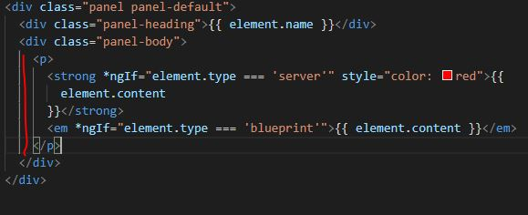

12 - ng-Content
Normally, everything you place between the calling of the component will be lost <app-something>This is lost by default in Angular </app-something>. However, using the directive ng-Content tag it will act as a hook to locate
Below, we take the following html from a child component that we would like to place in between the calling of the component.
Below, we take the following html from a child component, and place it between the brackets where it is called, ony changing naming convention of element to serverElement because of the ngFor statement
And going back to the child component html we insert the ng-Content hook to show where the content between the calling of the component should run in the sub-component.